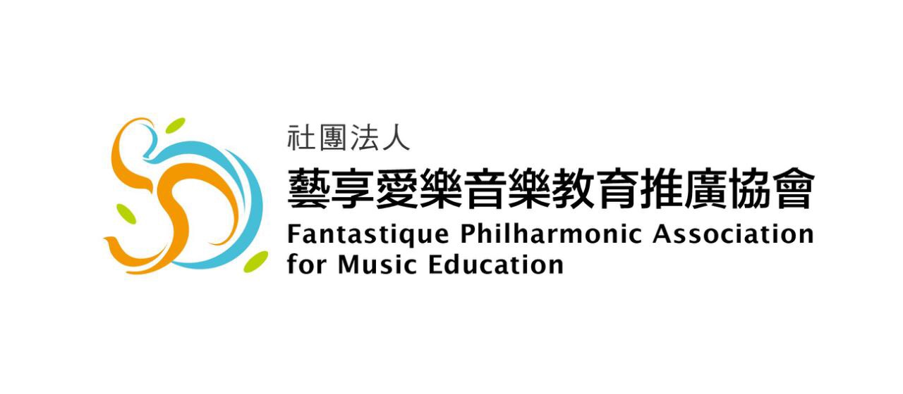

專業
由經驗豐富的師資陪伴孩子扎實學習，建立穩固的音樂基礎。

About FSO Taiwan
藝享愛樂音樂教育推廣協會致力於推廣音樂教育，透過專業師資、合奏訓練與舞台演出，陪伴孩子在音樂中學習、成長。
我們相信，音樂不只是演奏技巧，更是一段陪伴孩子探索自我、建立自信與培養合作精神的人生旅程。每一次排練、每一次演出、每一次掌聲，都將成為孩子成長路上最珍貴的回憶。
Core Values
由經驗豐富的師資陪伴孩子扎實學習，建立穩固的音樂基礎。
重視每位孩子的學習歷程，讓音樂成為成長路上的溫柔力量。
透過舞台演出累積自信與勇氣，學會面對挑戰、展現自己。
在合奏中學會傾聽、尊重與互相支持，培養團隊精神。
Programs
透過完整編制與舞台實作，累積團隊合作與演奏經驗。
以弦樂合奏培養音準、默契與音樂表現力。
連結校園與專業師資，推動更多孩子接觸音樂教育。
News
藝享愛樂官方網站正在重新設計，未來將提供更完整的活動、演出與招生資訊。
後續可在此新增音樂會、成果發表與藝文活動公告。
未來可建立招生簡章、報名表單與聯絡窗口，方便家長查詢。
Gallery
每一次登上舞台，都是成長的珍貴記憶。


Contact
後續可加入協會地址、電話、Email、Facebook、YouTube 與 Google Map。